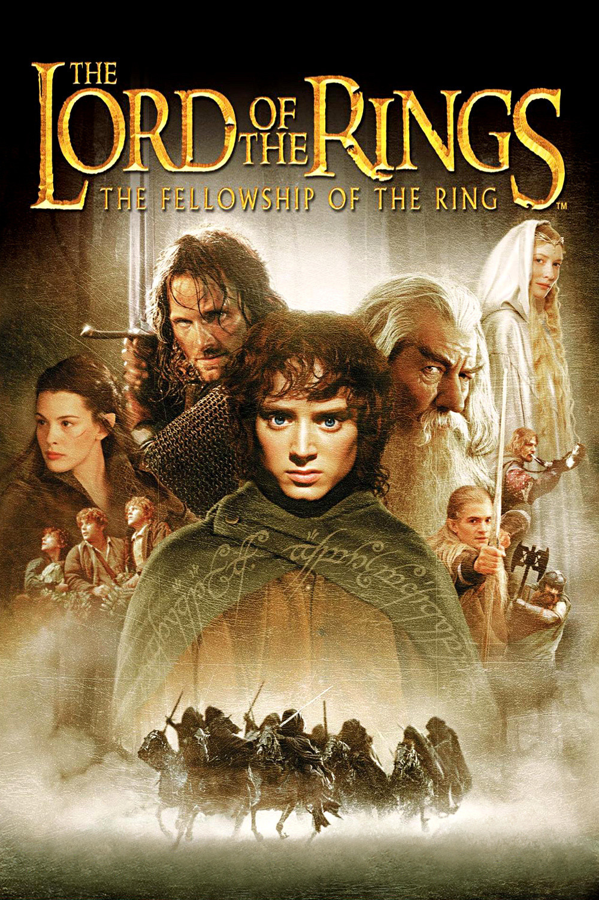
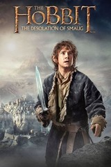

Lord Of The Rings
The Lord of the Rings is an epic high-fantasy novel by English author and scholar JRR

A select mob and his loyal companions take on the task of destroying The Only Ring, and destroying together with the wizard Gandalf, dwarves, elves and humans, Sauron, the ruler of darkness in Mordor.
Hobbit
Hobbit is a film trilogy based on JRR Tolkien's novel Bilbo - A Hobbit's Adventure from 1937. The first film, Hobbit: An Unexpected Journey, had its cinema premiere on December 12, 2012, the second, Hobbit: Smaug's Wilderness, had on December 11, 2013 and the third , Hobbit: Femhäraslaget, had on December 9, 2014

Bilbo Baggins (Martin Freeman) lives a simple life with his fellow hobbits in the shire, until the wizard Gandalf (Ian McKellen) arrives and convinces him to join a group of dwarves on a quest to reclaim the kingdom of Erebor. The journey takes Bilbo on a path through treacherous lands swarming with orcs, goblins and other dangers, not the least of which is an encounter with Gollum (Andy Serkis) and a simple gold ring that is tied to the fate of Middle Earth in ways Bilbo cannot even fathom..